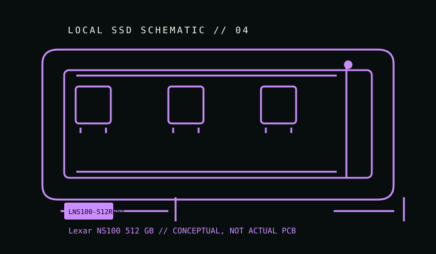

[ INDIVIDUAL COMPONENT // CONSUMER SATA SSD ]
Lexar NS100 512 GB
Capacity-specific catalog record for manufacturer model/SKU LNS100-512RBNA. Specifications are scoped to this capacity and the cited model information; other capacities and revisions may differ.

IDENTIFICATION: Match the full SKU LNS100-512RBNA, capacity, and label/revision before service or replacement. This is a consumer 2.5-inch SATA drive, not an enterprise model or an NVMe device.
Specifications & compatibility
| Manufacturer / model / SKU | Lexar NS100 // LNS100-512RBNA |
|---|---|
| Capacity | 512 GB nominal model capacity. |
| Form factor / interface | 2.5-inch, 7 mm height; SATA III 6 Gb/s. |
| NAND | 3D NAND; Lexar does not specify TLC/QLC or guarantee supplier/revision on its public NS100 page. |
| Rated sequential performance | Up to 550 MB/s sequential read; the cited Lexar page does not publish a capacity-specific sequential write ceiling. These are published peak figures, not a guarantee of sustained writes or every host workload. |
| Endurance | 256 TBW for the 512 GB SKU in the independent model database; confirm the exact revision and warranty terms before using this as a service limit. TBW is a rated-write limit, not a prediction of an individual drive's service life. |
| Host compatibility | Fits a compatible 2.5-inch SATA bay using SATA data and power. Host support, bay/caddy clearance, and SATA boot support are system-specific; use a SATA III port for the advertised interface rate and an OS/driver that passes TRIM. |
| TRIM / SMART / firmware | Use the host OS, SATA controller, and firmware tools supported for this exact model/revision. TRIM and SMART pass-through depend on the OS driver, controller mode, enclosure, and bridge; check vendor documentation before firmware changes. |
Preservation & maintenance
- Record the label, exact SKU, serial, firmware, host/controller, and a read-only SMART snapshot before migrating or changing settings.
- Keep independent, verified backups. A TBW rating, SMART indicator, warranty, or wear estimate is not a guarantee of data retention or remaining life.
- Use the manufacturer's exact-model guidance for firmware, secure erase, encryption, diagnostics, and warranty; preserve the original label and firmware state.
- Do not assume identical NAND or controller internals across production batches unless the manufacturer identifies the revision.
Sources
- Lexar — NS100 2.5-inch SATA III product specificationsHTTPS source; model/capacity details cross-referenced with the separate listed source.
- TechPowerUp — NS100 512 GB specification recordHTTPS source; model/capacity details cross-referenced with the separate listed source.
Two distinct HTTPS references are provided for cross-checking. Where an attribute is not fixed or published for the exact SKU, this record says so rather than inferring a family-wide value.